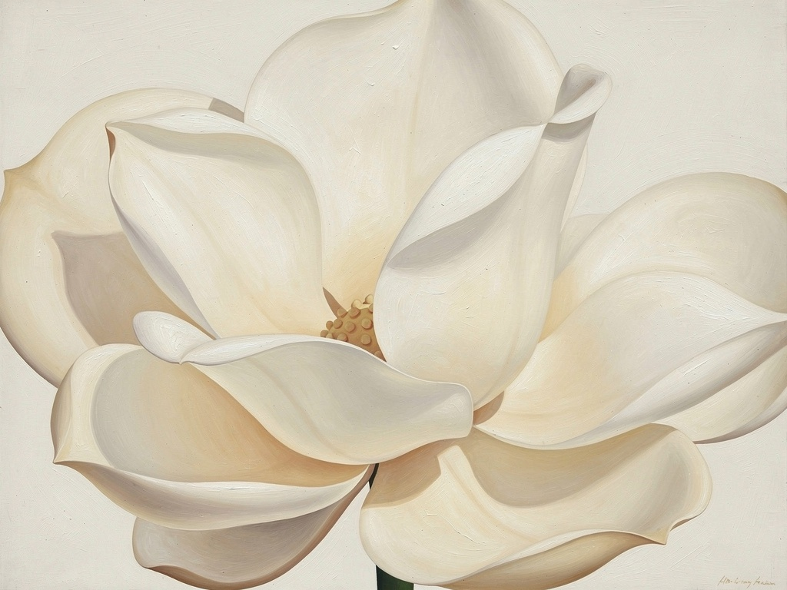

Lesson 2.3
How small
is small?
Everything changes when you move closer.
Step 1
Choose a small object.
A flower, leaf, stone, or shell.
Move closer —
until it stops being a thing
and becomes shapes and colors.
Step 2
What do you see now —
that you didn't see before?
I discovered something I hadn't seen before
It looks completely different
I can barely recognize what it is
Reference

O'Keeffe painted flowers. But not as we see them from a distance. She moved closer — until they filled the entire frame.
Principle
When you enlarge enough —
the object begins to disappear.
When you enlarge enough —
the object begins to disappear.
The shape remains.
Step 3
Choose one small part
of your object.
Draw only that — very large.
Let the edges go beyond the page.
Step 4
The viewer doesn't need to
recognize what it is —
only to enter the shape.
Step 5
Stop.
Does it still look like
the object?
Still recognizable
Became something else
Something in between
When you moved closer —
you saw something else.
That didn't happen by chance.
It was your decision.